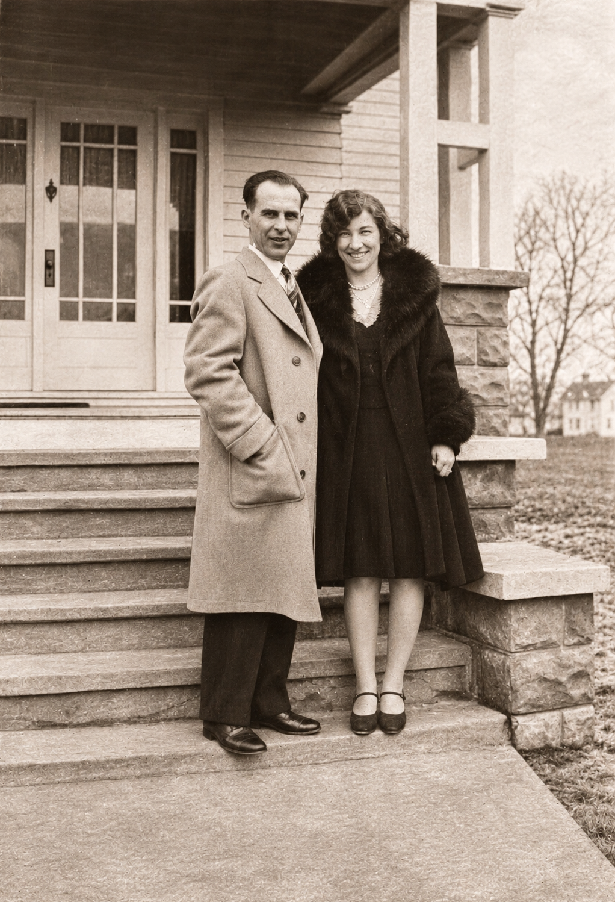
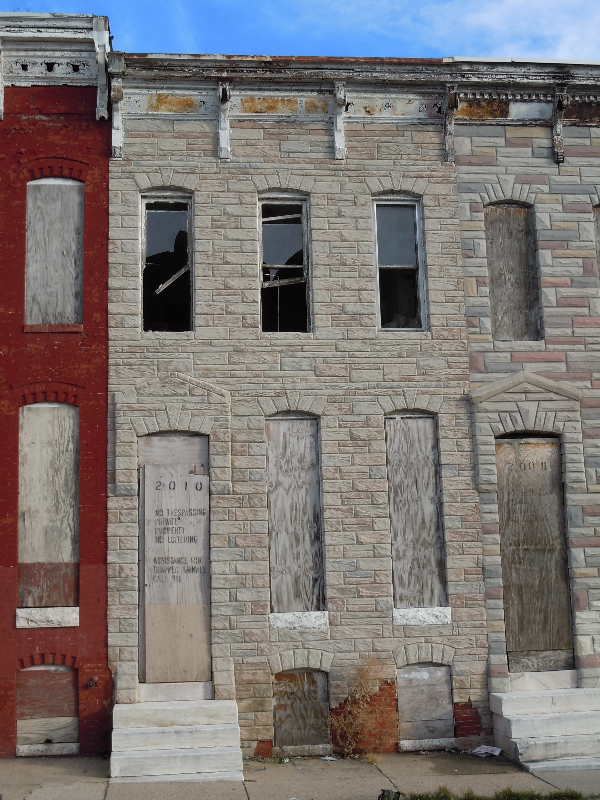
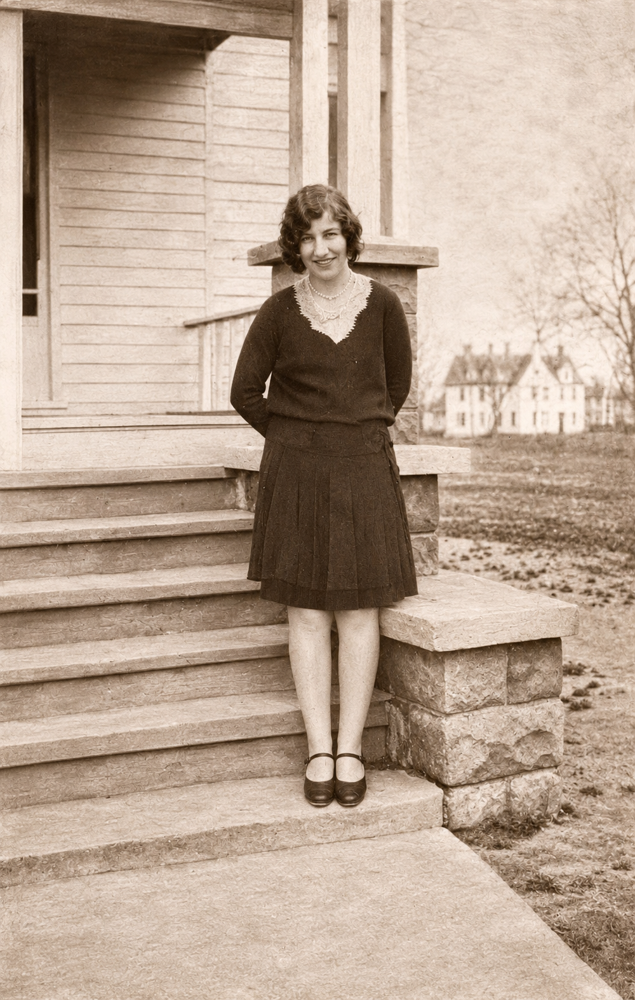
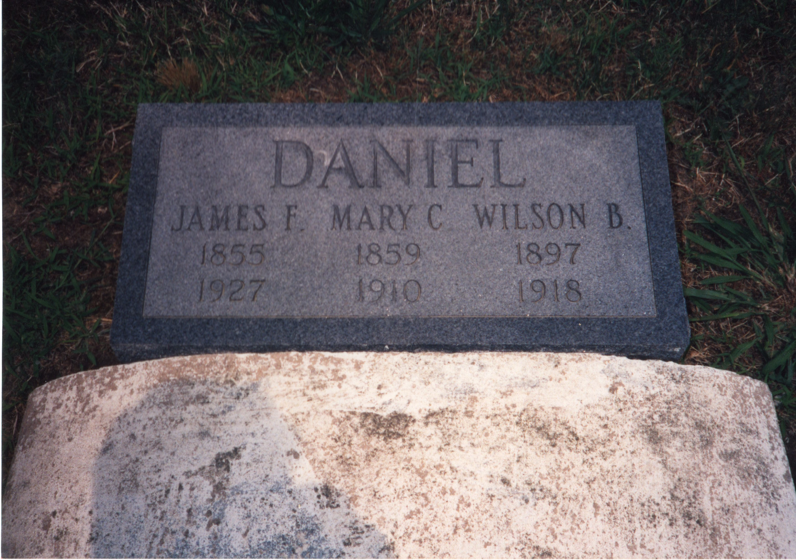
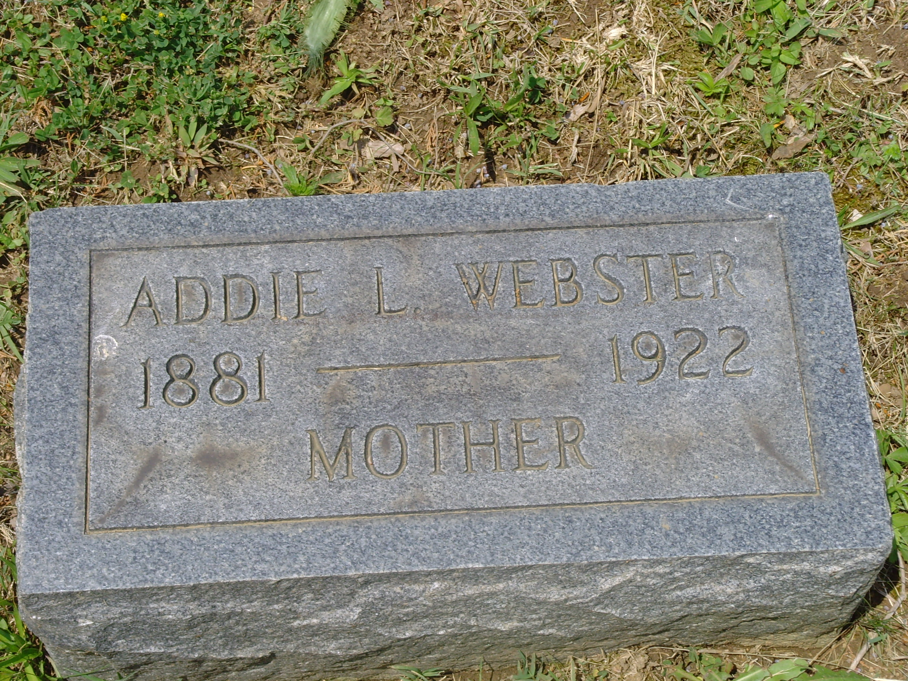

Explore photographs from the Kramer and Webster
families, including family portraits, historical
photographs, and gravestones.

Adam Kramer and Sue Catherine Webster
Adam Johannes Kramer (left) and Sue Catherine Webster (right) standing together outside a house. Adam wears a light-colored overcoat, while Sue wears a dark coat with a fur collar. Date and location unknown. Digitally restored from an original family photograph.
People:
Adam Johannes Krämer
,
Susie Catherine "Sue" Webster

Charles Daniel Webster and Adam Kramer, March 1929
Charles Daniel Webster (left) and Adam Kramer (right), photographed outside a brick building at 202 Luzerne Avenue in Baltimore, Maryland, in March 1929. The photograph was taken approximately four months before Adam married Charles's sister, Sue Catherine Webster, on July 27, 1929.
People:
Charles Daniel Webster
,
Adam Johannes Krämer

Daniel Family Home – 2010 Walbrook Avenue, Baltimore
Photograph of the former Daniel family residence at 2010 Walbrook Avenue, Baltimore, Maryland, taken in the early 21st century. Mary Catherine Wilson Daniel (1859–1910) was living at this address when she died on October 4, 1910, according to her death notice published in The Baltimore Sun on October 5, 1910. The photograph shows the three-story rowhouse with boarded windows and doors and visible deterioration. The photograph's exact date and the building's subsequent history have not yet been established.
People:
James Fairfax Daniel Sr.
,
Mary Catherine Wilson

Florence Webster Adams and Eugene Webster
Florence Melson Webster Adams (left) seated with her younger brother, Eugene Lee Webster (right), on a sofa. Date and location unknown.
People:
Florence Melson Webster
,
Eugene Lee Webster

Florence Webster and Vernon Adams Outdoors
Florence Melson Webster Adams (left) and her husband, Vernon L. Adams, standing together outdoors, dressed in coats and hats. Date and location unknown.
People:
Vernon L. Adams Sr.
,
Florence Melson Webster

Florence Webster and Vernon Adams Seated on Steps
Florence Melson Webster Adams (left) and her husband, Vernon L. Adams, seated together on the steps outside a brick building. Date and location unknown.
People:
Florence Melson Webster
,
Vernon L. Adams Sr.

Gabriel Snead Webster Standing Outside a Building
Full-length photograph of William Gabriel Snead Webster (1871–1939) standing on a sidewalk in front of a brick building and chain-link fence. He is wearing a dark suit, tie, and round eyeglasses. The location and date of the photograph have not been established.
People:
William Gabriel Snead Webster

Gabriel Snead Webster with Family Members
Group photograph showing William Gabriel Snead Webster (1871–1939) standing outdoors with four other individuals, including three women or girls and a young child. The photograph was taken beside a building under a tree. The identities of the other individuals, location, and date remain to be confirmed.
People:
William Gabriel Snead Webster

Sue Catherine Webster Standing on Front Steps
Sue Catherine Webster standing on the front steps of a house, wearing a dark dress and Mary Jane shoes. Date and location unknown. Digitally restored from an original family photograph.
People:
Susie Catherine "Sue" Webster

Daniel Family Gravestone – James F., Mary C., and Wilson B. Daniel
Daniel family gravestone at Saint Johns Cemetery, Deal Island, Somerset County, Maryland. The marker commemorates James F. Daniel (1855–1927), Mary C. Daniel (1859–1910), and Wilson B. Daniel (1897–1918). Mary Catherine Wilson Daniel was the mother of Addie Leola Daniel Webster.
People:
James Fairfax Daniel Sr.
,
Mary Catherine Wilson

Gravestone of Addie Leola Daniel Webster
Gravestone of Addie Leola Daniel Webster (1881–1922) at Woodlawn Cemetery, Baltimore, Maryland. The marker bears the inscription 'ADDIE L. WEBSTER' and 'MOTHER.' Her death certificate records her burial on April 28, 1922.
People:
Addie Leola Daniel

Gravestone of Gabriel Snead Webster
Gravestone of Gabriel Snead Webster (1871–1939) at Woodlawn Cemetery, Baltimore, Maryland. The marker is inscribed 'GABRIEL S. WEBSTER, 1871–1939, FATHER.'
People:
William Gabriel Snead Webster

Gravestone of Vernon L. Adams and Florence M. Adams
Shared bronze grave marker of Vernon L. Adams (1899–1974) and Florence M. Adams (1904–1979) at Moreland Memorial Park in Parkville, Maryland. The marker bears the inscription 'Together Forever.'
People:
Vernon L. Adams Sr.
,
Florence Melson Webster